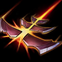

起手裝備
 長劍
長劍
改狂暴利刃、C44、多明尼克、無盡、嗜血；鞋改狂戰士／槍銅，支援安全距離持續普攻。火炮改為整格替換 C44 的情境方案。 長劍起手保留；五成裝與獨立二、三級鞋線已分開，未照抄外站 Galeforce 鞋附魔欄。


五件成裝與鞋子分開列示；起手與核心是購買路線，不是額外佔用的成裝欄位。鞋子完成時機仍依對線壓力與回城金錢調整。


瞬疾步法改致命節奏，並改斷切、血脈，和新普攻路線一致；骨甲保留，並非犧牲全部防守。


預設閃現＋鬼步，配合長射程普攻與陷阱／獵網爆頭維持輸出距離；無法靠鬼步穿越硬控。選角時若對方爆發與控制過多，可把鬼步換光盾，連招不得假設同時擁有兩者。
加點優先：Q > W > E
Q > W > E：一技推線先滿，陷阱次滿強化物件區控制；網子留作反突進，原等級分配保留。
規律觸發爆頭；陷阱與獵網命中可提供遠距爆頭機會，傷害會受到暴擊屬性影響。
有後續版本調整的項目以較新數值為準；未列出者不代表完整技能成長表。
有後續版本調整的項目以較新數值為準；未列出者不代表完整技能成長表。

短暫蓄力後發射穿透步槍彈，對直線敵人造成物理傷害，可用於清線與遠距消耗。
有後續版本調整的項目以較新數值為準；未列出者不代表完整技能成長表。
放置陷阱定身並揭露敵人；對受困目標的爆頭有額外傷害。
有後續版本調整的項目以較新數值為準；未列出者不代表完整技能成長表。
發射獵網造成傷害與短暫緩速，自己向反方向位移；命中後可接遠距爆頭。
有後續版本調整的項目以較新數值為準；未列出者不代表完整技能成長表。
鎖定遠距敵方英雄並在瞄準後射出子彈，造成高額物理傷害；其他敵方英雄可以站到路徑上擋下。
有後續版本調整的項目以較新數值為準；未列出者不代表完整技能成長表。
明確 C44 不會永久增加射程，火炮只有充能攻擊增程；鬼步改為預設後同步後期敘述，光盾只作選角防爆發替換。
3技命中 → 1技穿透 → 遠距爆頭
獵網命中後利用反向位移拉開距離，接一技與遠距爆頭。這套適合反打突進，不要為了消耗主動交掉唯一位移。
2技接控制 → 陷阱爆頭 → 1技補傷害 → 3技拉開 → 獵網爆頭
把陷阱接在隊友控制落點或敵方必經窄口，先打陷阱爆頭，再用一技與獵網延伸傷害；若敵方仍能反撲，獵網優先自保。
2技封入口 → 遠距消耗 → 1技壓血 → 4技收殘血
開戰前先用陷阱切割路線並持續點射，等目標脫離隊友保護或沒有英雄能擋子彈時，再用大絕完成收尾。
利用基礎射程優勢在敵方補刀時穿插普攻，並用鎮暴射擊同時清線與消耗。陷阱放在草叢入口、牆邊與輔助控制落點，而不是隨意丟在兵線中央；九零式獵網要保留躲關鍵技能或拉開突進，命中後立刻接遠距爆頭。
狂暴利刃、C44 成形後，用長射程普攻與陷阱壓迫，不再依賴舊預設火炮充能。多明尼克第三件補穿甲；充能跑速和鬼步支援走砍，陷阱接隊友控制，網子保留拉開突進。
維持安全普攻距離，以爆頭和暴擊輸出最近目標；鬼步用來延長走砍距離，陷阱保護側翼，獵網留給突進。對線若預先判斷爆發太高，可在選角把鬼步改光盾；本頁預設不再使用光盾。不要為架大絕停在危險位置。
艾希可用緩速限制走砍，凱莎能靠標記突進，伊澤瑞爾可位移躲網子與一技；先封側翼，射程優勢不等於可以無視敵方輔助。 威脅名單採同分路指南，較有利名單保留機制判斷並移除與威脅名單重疊者；現有輔助組合逐項複核技能互動後保留。
對局名單是機制與分路判斷，不代表固定勝率；需同時看雙方熟練度、兵線與陣容。
艾希可用緩速限制走砍，凱莎能靠標記突進，伊澤瑞爾可位移躲網子與一技；先封側翼，射程優勢不等於可以無視敵方輔助。
下列輔助配合以技能互動為依據。拉克絲、魔甘娜、枷蘿仍可配合本頁打法；先確認對手輔助的控制與兩邊召喚師技能，單一射手對局不代表必勝。
定身後可直接接陷阱與爆頭，是最穩定的遠距壓線組合。
黑暗禁錮能接陷阱，黑暗之盾也能保護凱特琳維持射程壓制。
植物與纏繞能封鎖走位，方便凱特琳擺放陷阱並壓制塔下。
依凱特琳的長射程普攻與陷阱／獵網爆頭路線選擇替換；先看實際死亡與傷害不足原因。
依敵方前排成形調整
觸發：敵方前排已形成高生命或高防禦，正面輸出受阻。
凱特琳保留前述五成裝加獨立鞋線；同一格不同情境擇一替換，不全部加購。
先保留預設穿甲核心，單一裝備格的調整不代表重買另一套。
保命格可提早
觸發：被同一輪突進秒殺，無法打出主要技能與普攻。
嗜血者 → 守護天使
主要死亡原因是刺客或突進一次切入，且隊友能掩護復活位置。
嗜血者整格換守護天使，犧牲部分長射程普攻與陷阱／獵網爆頭或持續防禦；復活後無人接應時先改善站位。
嗜血者 → 魔提斯深淵
敵方主要擊殺來源是魔法爆發，且尚未裝另一件生命線裝備。
以嗜血者換魔提斯處理魔法爆發；不把魔防誤當通用抗物理方案。
復活與魔法生命線處理的傷害不同，按實際威脅擇一；盾弓與魔提斯不重複保留。
先判斷控制能否解除
觸發：可解除的禁錮、暈眩等控制反覆中斷輸出。
嗜血者 → 水星彎刀
可解除的控制反覆讓自己無法輸出，且閃現不能解決。
以嗜血者換水星彎刀；主動要手動使用，不能解除擊飛或擊退，也不是舊版附魔。
水星彎刀是成裝，不佔鞋子升級；擊飛、擊退須靠預先走位或隊友保護。
治療已影響集火時
觸發：敵方持續治療抵銷集火，且團隊缺乏穩定重創。
多明尼克的問候 → 致死宣告
敵方治療或吸血持續影響勝負，隊友無法穩定施加重創。
致死宣告替換多明尼克；保留暴擊、穿甲與重創，不並排買兩件。
需要時先用死刑宣告過渡；不要把所有敵方英雄都當成必出重創的理由。
團隊無其他反盾者才承擔
觸發：大量反覆護盾持續阻止集火，且自己能穩定命中目標。
嗜血者 → 巨蛇鋒牙
隊友無法施加反盾，且護盾確實抵銷主要輸出。
嗜血者換巨蛇鋒牙會犧牲原末段功能；凱特琳仍需保留主要輸出核心，只有單一小護盾時不換。
反盾屬團隊分工，不為一個小盾放棄整條普攻或技能路線。
需要較遠的一次普攻起手，難以在正常射程連續攻擊時。

火炮整格替換 C44，失去高物攻與距離傷害被動，換充能攻擊射程及攻速；不是第六件成裝，也不是永久射程。
7.3d差異核對：本頁核對官方英雄／裝備差異與現行配置參照；未列的技能不表示已完成逐級實測。查看校正範圍。
本頁校正版本：7.3d；校正日期：2026-10-25。
參考來源標示版本：7.3c
本輪核對官方版本差異、道具/符文引用、五成裝與鞋線、逐級加點及情境替換一致性。Tier及玩法屬本站編輯判斷，不是官方排名或台服勝率；未公開的全級技能表不推算。
評級理由：7.3c 維持 S（本站判斷）。依當前同分路指南由 B 校正為 S；長射程、爆頭與陷阱的線權價值重新評估，並非把舊低評級直接當成當前實力。 7.3c 未改動此分路的英雄數值，沒有新證據只因版本號而升降。
Riot 官方資料 ↗ · Riot 官方資料 ↗ · Riot 官方資料 ↗ · Riot 官方資料 ↗ · Riot 官方資料 ↗ · WildRiftFire 參考攻略 ↗
7.3c 的直接英雄倍率改動屬符文大亂鬥；本召喚峽谷配置承接 7.3b。未把模式專屬增削轉為峽谷增削。
五件成裝、獨立鞋線、起手、核心、情境替換引用與一般符文列別均重新檢查；移除裝備不列入當前推薦。
歷史資料有後續調整時，以較新版本數值為準。
| 項目 | 調整前 | 調整後 |
|---|---|---|
| 每級攻速 | 0.04 | 0.025 |
| 項目 | 調整前 | 調整後 |
|---|---|---|
| 公告列示百分比 | 60%–100%（隨等級） | 60%–90%（隨等級） |
歷史資料有後續調整時，以較新版本數值為準。
| 項目 | 調整前 | 調整後 |
|---|---|---|
| 基礎物攻 | 54 | 60 |
| 每級物攻 | 4.5 | 4.2 |
| 項目 | 調整前 | 調整後 |
|---|---|---|
| 爆頭額外傷害 | (60% - 110%) ×物攻 + 200 ×暴擊率 | (60% - 100%) ×物攻+暴擊率× 100% +（暴擊傷害- 2）×暴擊率× 100% ×物攻 |
| 項目 | 調整前 | 調整後 |
|---|---|---|
| 傷害 | 60 / 110 / 160 / 210 + 125 / 140 / 155 / 170%物攻 | 50 / 100 / 150 / 200 + 125 / 145 / 165 / 185%物攻 |
| 項目 | 調整前 | 調整後 |
|---|---|---|
| 陷阱目標爆頭追加傷害 | — | 40 / 90 / 140 / 190 + 30% 額外物攻（物理傷害） |
| 項目 | 調整前 | 調整後 |
|---|---|---|
| 緩速持續時間 | 1.5秒 | 1秒 |
| 項目 | 調整前 | 調整後 |
|---|---|---|
| 傷害 | 200 / 375 / 550 + 200%額外物攻 + 20%目標已損失生命 | （250 / 450 / 650 + 100%額外物攻 + 20%目標已損失生命）×（1 +暴擊率× 30% +（暴擊傷害- 2）× 30% ×暴擊率） |